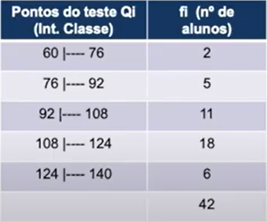

O que são as Medidas de Tendência Central?
São quando os dados observados de uma distribuição ficam em torno dos valores
centrais. Nós temos três Medidas de Tendência Central, média, moda e
mediana.
Média
Seguindo uma definição mais informal de "média", pode-se assumir que
no campo da estatística, dados possuem posições. Por exemplo, cada valor dos
lançamentos de um dado possui sua posição em uma planilha eletrônica. Em
estatística, média é uma medida de posição que indica um valor
uniforme dos dados.
Moda
Moda é uma das medidas de altura de um conjunto de dados, assim como a média e a
mediana. Ela pode ser definida em moda amostral e populacional.
Em relação à primeira delas, a moda amostral de um conjunto de dados trata do
valor que ocorre com maior frequência ou o valor mais comum em um conjunto de dados. Moda
é especialmente útil quando os valores ou as
observações não são numéricos, casos em
que a média e a mediana não podem ser definidas. Por exemplo, a
moda da amostra {maçã, banana, laranja, laranja, laranja, pêssego}
é laranja. Moda amostral não é necessariamente única
como média ou mediana. Amostras que possuem uma moda são chamadas
unimodais. Por exemplo, a amostra {1, 2, 3, 5, 5, 6, 7} tem moda 5. Amostras que
possuem duas modas são chamadas bimodais. Por exemplo, a amostra {1, 2, 3,
5, 5, 6, 6} tem modas 5 e 6. Amostras que possuem várias modas são chamadas
multimodais. Por exemplo, a amostra {1, 2, 3, 5, 5, 6, 6, 7, 7} tem modas 5, 6 e 7.
Amostras que não possuem moda são chamadas amodais. Por exemplo, a
amostra {1, 3, 2, 5, 7, 6} não tem moda, pois todos ocorrem o mesmo número de vezes.
Mediana
Mediana é o valor que separa a metade maior e a metade menor de uma amostra, uma
população ou uma distribuição de probabilidade. Em termos mais simples,
mediana pode ser o valor do meio de um conjunto de dados. No conjunto de dados {1, 3, 3, 6, 7, 8,
9}, por exemplo, a mediana é 6. Se houver um número par de observações,
não há um único valor do meio. Então, a mediana é definida como a
média dos dois valores do meio. No conjunto de dados {3, 5, 7, 9}, a mediana é (5 + 7)
/ 2}} = 6.
A - Variável Qualitativa (nominal ou ordinal):
Na qualitativa nominal a ordem não importa, já na ordinal, temos que ordenar as
variáveis em uma ordem lógica.
- média (ponderada simples):
- moda:
- é a Variável de maior Frequência Simples(fi).
- mediana:
- temos que encontrar a posição onde se encontra a mediana, que é o
elemento central localizado na Frequência Acumulada(fac) caso a fi(total) for
impar; já quando a fi(total) for par, a mediana será encontrada em duas
posições, em 50% da fi(total) e na posição seguinte.
- interpretação:
- 50% das "Variáveis(xi)" estão relacionadas com a
"Mediana" e abaixo na condição pesquisada, e 50% das
"Variáveis(xi)" estão relacionadas com a
"Mediana" e acima na condição pesquisada.
B - Variável Quantitativa Discreta (pouca variedade e muita
repetição de dados):
1º) Coletar os Dados;
2º) Organizar os dados, ordenando-os;
3º) Tabular os dados em duas colunas, a primeira com o Nome da Variável pesquisada(xi), e
a segunda coluna com a Frequência Simples(fi) dos dados;
4º) Calcular as Medidas de Tendência Central:
- média (ponderada simples):
- xi * fi + xi * fi ... + xi * fi / fi(total).
- interpretação:
- em média cada Variável(xi) está relacionada aproximadamente
com a Média na condição pesquisada.
- moda:
- é o Variável(xi) que tem a maior Frequência Simples(fi); Pode ser
unimodal quando tem uma só moda, bimodal quando tem duas, multimodal quando tem
mais de duas modas, e amodal, quando não há moda, como já explicado
acima.
- mediana:
- temos que encontrar a posição onde se encontra a mediana, que é o
elemento central localizado na Frequência Acumulada(fac) caso a fi(total) for
impar; já quando a fi(total) for par, a mediana será encontrada em duas
posições, em 50% da fi(total) e na posição seguinte.
- interpretação:
- 50% das "Variáveis(xi)" estão relacionadas
aproximadamente com a "Mediana" ou menos na condição
pesquisada, e 50% das "Variáveis(xi)" estão relacionadas
aproximadamente com a "Mediana" ou mais na condição
pesquisada.
C - Variável Quantitativa Contínua:
1º) Coletar os dados;
2º) Organizar os dados, ordenando-os;
3º) Construção da tabela que se dá em três etapas;
- encontrar a Amplitude Total(At) de uma sequência:
- At = Xmax(valor da última posição dos dados)
- Xmin(valor da primeira posição dos dados).
- encontrar a quantidade de classes(linhas (k)) que a tabela pode ter:
- k = √n, onde n é o total de elementos coletados, e de onde
teremos o resultado obtido como o número de linhas ou menos uma linha, ou ainda
mais uma linha.
- encontrar o intervalo de classes, ou seja, o intervalo dos elementos que serão
apresentados em cada linha:
- At(+ no mínimo um) / k;
- Assim descobrimos quantas classes(linhas) a tabela terá, e o invervalo dos itens
que serão apresentados em cada linha, no exemplo abaixo foi obtidos o resultado
de 5 linhas com o intervalor de 16 elementos: (onde esse símbolo | representa a
inclusão do limite inferior na classe e a exclusão do limite superior da
classe)

4º) Calcular as Medidas de Tendência Central:
- média (ponderada simples):
- xi é o ponto médio do intervalo de classes, ainda com o exemplo acima:
- (60(intervalo mínimo) + 75(intervalo máximo) / 2 = 68 * fi
+ (icMin + icMax) / 2 * fi ...) / fi(total);
- interpretação:
- a média desta "Variável(xi)" é de
"Média" na condição pesquisada.
- moda simples: (existem outros tipos de moda)
- é o Xi(neste caso, a média simples da classe modal);
- interpretação:
- o ponto mais frequente observado nesta variável foi de
"Mediana" na condição pesquisada.
- mediana:
- temos que encontrar a posição onde se encontra a mediana, que é o
elemento central localizado na Frequência Acumulada(fac) caso a fi(total) for
impar; já quando a fi(total) for par, a mediana será encontrada em duas
posições, em 50% da fi(total) e na posição seguinte.
- posição da Mediana 50% do fi(total) e a posição seguinte;
- Md = I(limite inferior da classe) + ∑fi / 2 - Fant(Frequência Acumulada
Anterior) / find(Frequência Simples da Mediana * h(intervalo de classes).
- interpretação:
- 50% das "Variáveis(xi)" estão relacionadas
aproximadamente com a "Mediana" ou menos na condição
pesquisada, e 50% das "Variáveis(xi)" estão relacionadas
aproximadamente com a "Mediana" ou mais na condição
pesquisada.
Para entender melhor a matéria, assista à vídeoaula da Professora Maria
Luísa Cervi Uzun, em seu canal no YouTube, disponível abaixo.
Para melhor fixar a matéria, resolva os exercícios da lista preparada para esta aula,
clique aqui para baixar o arquivo.